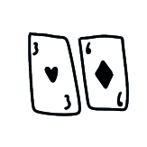
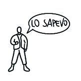

[ Ambiguità
Tendiamo a trovare storie e schemi anche quando esaminiamo dati scarsi.
Effetto alone
Perché le impressioni positive prodotte in un ambito influenzano positivamente le nostre opinioni in un altro ambito?
Leggi di piùBias del sopravvisuto
Perché crediamo che il successo sia più comune di quanto non sia in realtà?
Leggi di piùBias dello scommettirore

Perché pensiamo che un evento casuale abbia più o meno probabilità di verificarsi se è accaduto più volte nel passato?
Leggi di piùBias del senno di poi

Perché gli eventi imprevedibili sembrano prevedibili solo dopo che si sono verificati?
Leggi di più